Chapter 16: Land Revenue Systems (1765-1885)
The Farming System 1772, PS1793 (zamindar as owner), Ryotwari and Mahalwari are the peasant's grievance drivers; Cornwallis 86-93 experimented before PS1793.
| Year | Paper | Topic | Answer |
|---|---|---|---|
| 1998 | Prelims | (Prelims 1998) | (D) 2, 4, 1, 3 |
| 2006 | Prelims | (Prelims 2006) | (D) Sanyasi rebellion |
| 2018 | Prelims | (Prelims 2018) | (C) Both 1 and 2 |
| 2020 | Prelims | (Prelims 2020) | (D) Birsa Munda's Revolt of 1899–1900. • How did the colonial rule affect the tribals in India and what was the tr |
The teacher's board reads Less Imp overall but with some PYQs in both papers; four Prelims PYQs map, so know the PYQ-linked revolts cold. Closing idea: not 100% modern, but anti-colonial.
Read it like a film first. Then go to the notes: every fact below is expanded there.
Story spine: Peasants and tribals lose their security (land revenue, forests, religion), so they rise first, led by elites, peasants, sects or chiefs. The revolts are local, uncoordinated and not democratic, yet political and public, so they are the pre-history of modern nationalism and the culmination of a hundred years before 1857.
| Character | Role in the story | Hook |
|---|---|---|
| Raja Chait Singh | Big zamindar of Benaras whose estates were seized (1778-81) | The Raja |
| Debi Singh and Gobinda Singh | Oppressive revenue farmers whose grain stores Rangpur looted | The Villains |
| Wazir Ali 97-98 | Deposed Nawab of Awadh who revolted with peasant support | The Deposed Nawab |
| Bakshi Jagabandhu | Military commander of Khurda who led the Paikas, surrendered 1825 | The Commander |
| Dewan Veluthampi | Travancore's Dewan who rose against the Resident (1809) | The Dewan |
| Titu Mir | Wahabi leader with the bamboo fort at Narkelberia | Bamboo Fort |
| Dudu Mian | Faraizi leader: land belongs to God | The Sloganeer |
| Karim Shah and Tipu Shah | Pagal Panthi leaders; Tipu promised lower rents | K then T |
| Sido and Kanhu Murmu | Santhal brothers who led the Hool 1855-56 | The Brothers |
| Chakra Bisoi | Leader of the Kandh Uprising 1837-56 | Kandh Chief |
| U Tirot Sing | Leader of the Khasi Uprising 1829-33 | Khasi Leader |
| Lytton 76-80 | Viceroy under whom the Forests Act 1878 was passed | The Forester |
| Birsa Munda | Leader of the Ulugulan 1899-1900 | Bullets to Water |
| Alluri Sitarama Raju | Rampa leader who restarted the Fituri; executed 1924 | Fituri Martyr |
| Key term | In plain words |
|---|---|
| WEMC | Western Educated Middle Class: responded to British rule through socio-religious reform movements |
| Ryot / peasant | A cultivator who farms for food security and is poor; one who farms for profit and is rich is a farmer |
| Revenue farmer (ijaradar) | The man who won the right to collect land revenue at auction under the Farming System of 1772 |
| Abwab | An illegal extra cess charged by the zamindar |
| Occupancy right | Right not to be arbitrarily evicted, earned by over twelve years of continuous cultivation (Rent Act 1859) |
| Jhum / Podu | Shifting, slash-and-burn cultivation (Podu is the Andhra word) |
| Abkari | Excise administration: the state monopoly over liquor and drugs |
| Poligar | A traditionally autonomous local chief in South India |
| Janmie | A Brahmin princely landlord of Malabar, recognised by the British as the only legal owner |
| Diku | The Santhal word for outsiders: non-Santhal zamindars and moneylenders |
| Hool / Ulugulan | The Santhal word / the Munda word for a rising |
| Fituri | The violent rebellion re-initiated by Alluri Sitarama Raju after 1922 |
Remember it as Peasants and tribals rose first, led by elites, peasants, sects or chiefs: not 100% modern, but anti-colonial, the pre-history of modern nationalism.
| Year and paper | What was asked | The answer or trap | Where in this chapter | |
|---|---|---|---|---|
| Prelims 1998 | The correct chronological sequence of: 1. Indigo Revolt, 2. Santhal Rebellion, 3. Deccan Riot, 4. Mutiny of the Sepoys. (a) 4,2,1,3 (b) 4,2,3,1 (c) 2,4,3,1 (d) 2,4,1,3 | (d) 2, 4, 1, 3. The teacher wrote the years beside the events: Indigo 1859, Santhal 1855, Deccan Riot 1875, Mutiny 1857, and ticked (d). Santhal (1855-56) is before the Mutiny (1857); Indigo (1859) is before the Deccan Riot (1875). Options (a) and (b) put the Mutiny before the Santhal rising; (c) reverses the last pair | Section 8.7 (Santhal); Indigo and Deccan Riot are in [[22 | Chapter 22]] |
| Prelims 2006 | Which revolt was made famous by Bankim Chandra Chatterjee in his novel Anand Math? (a) Bhil (b) Rangpur and Dinapur (c) Bishnupur and Birbhum (d) Sanyasi rebellion | (d) Sanyasi rebellion. Handout alert and slide agree. Wrong options are all other revolts of this chapter: Bhil (tribal, 1818-31), Rangpur (peasant-led, 1783), Bishnupur and Birbhum (civil, 1789) | Section 7.1 | |
| Prelims 2018 | After the Santhal rising subsided, which measures did the colonial government take? 1. 'Santhal Paraganas' were created. 2. It became illegal for a Santhal to transfer land to a non-Santhal. | (c) Both 1 and 2. The handout stresses the land-transfer restriction as the key point | Section 8.7 | |
| Prelims 2020 | 'Ulgulan' or the Great Tumult describes which event? (a) Revolt of 1857 (b) Mappila Rebellion 1921 (c) Indigo Revolt 1859-60 (d) Birsa Munda's Revolt 1899-1900 | (d) Birsa Munda's Revolt 1899-1900. The trap options are the other big revolts the student has just read about | Section 10.1 | |
| Mains (year not written on the slide) | "1857 Revolt was the culmination of small and big rebellions in the first 100 years of British rule." (the teacher's board: "Similarities: grievances, methods, leadership") | Compare the earlier revolts with 1857 on the three heads the teacher drew. Skeleton below | Sections 1, 4, 5, 9 |
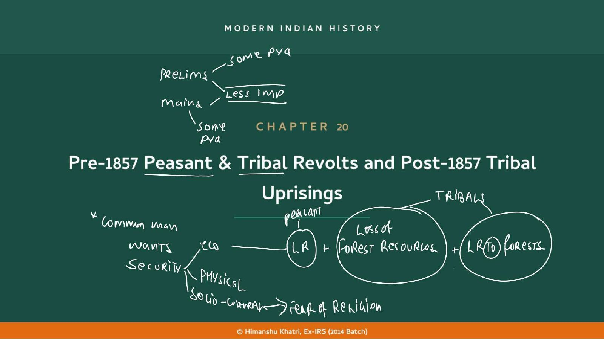
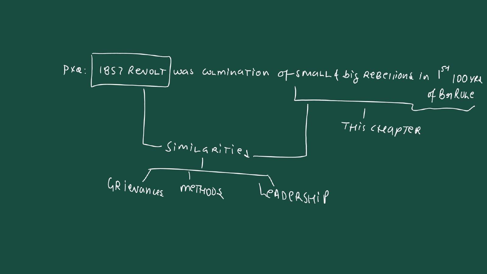
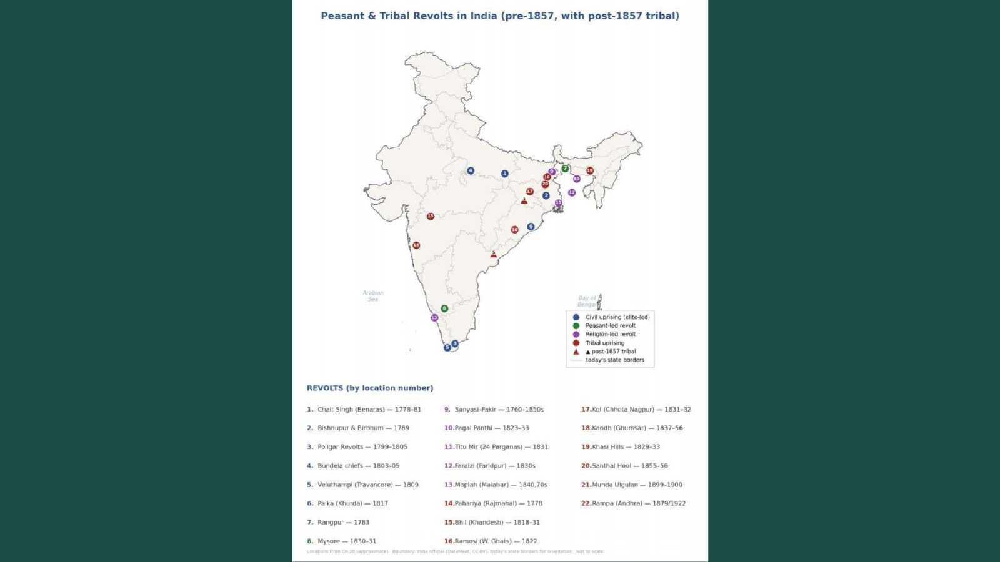
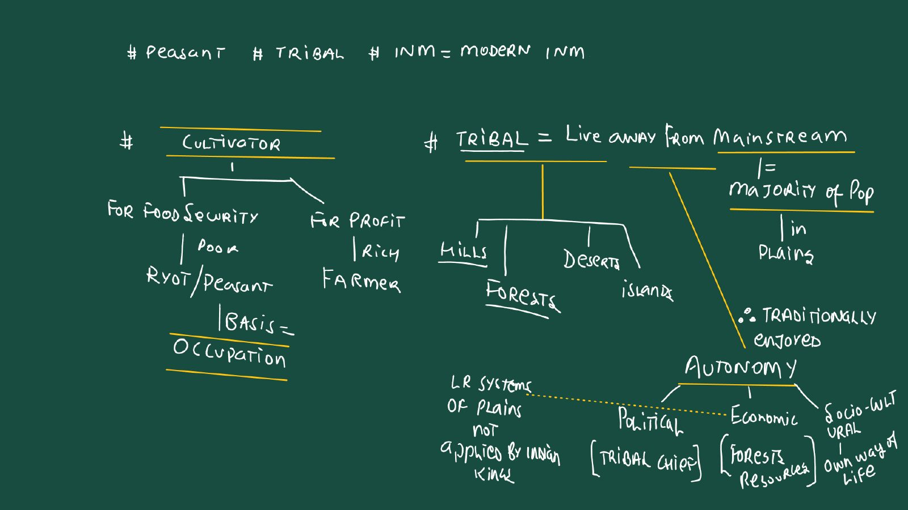
| System and period | How it squeezed the ryot |
|---|---|
| Farming System of 1772 (Bengal) | LR collection was auctioned to the highest bidder, a revenue farmer (the teacher: ijaradar). He extracted as much rent as he could, with the support of British officials, since collection happened under the District Collector's supervision. The peasant had no protection |
| Permanent Settlement 1793 (PS1793) | Replaced the revenue farmer with the zamindar as permanent owner. For the ryot it was not an improvement: the zamindar charged high rents, imposed illegal extra cesses called abwabs, and evicted at will. The ryot had no occupancy rights (no security of tenure), and British law was on the zamindar's side since all legal rights in land were vested in him |
| Rent Act of 1859 | Meant to correct this: a ryot who cultivated the same plot continuously for over twelve years earned occupancy right (not to be arbitrarily evicted). But its implementation in Bengal was ineffective and the exploitation continued |
| Ryotwari and Mahalwari areas | The oppression came directly from the British government through high LR demands. If the ryot could not pay, his land was auctioned; this drove him to the moneylender; high interest led to deeper indebtedness; default meant losing land to the moneylender. The peasant went from cultivator with land to labourer on someone else's field |
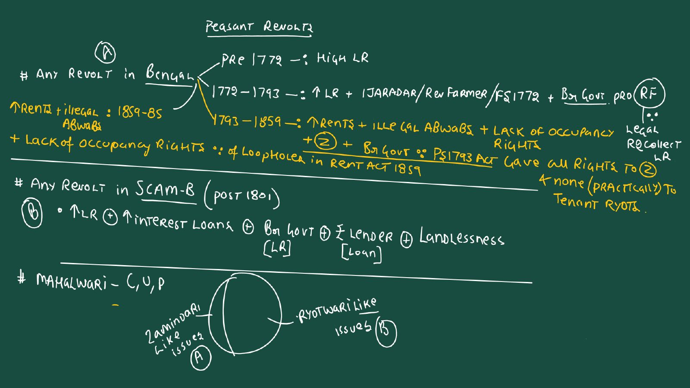
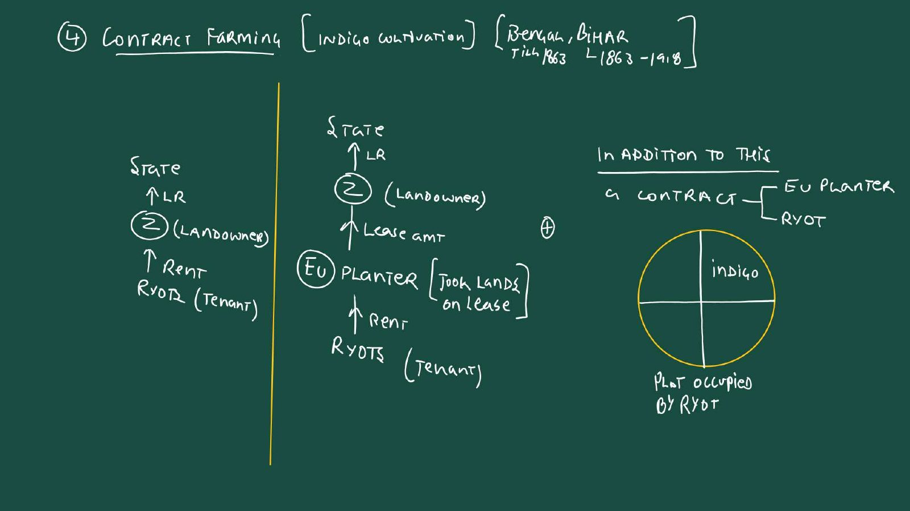
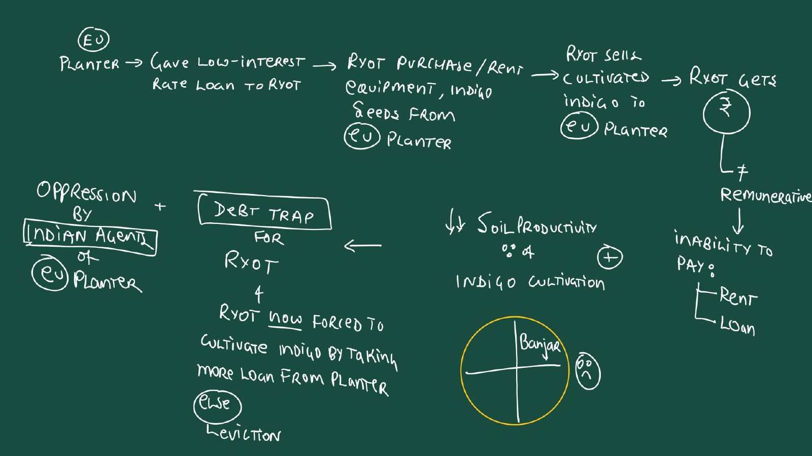
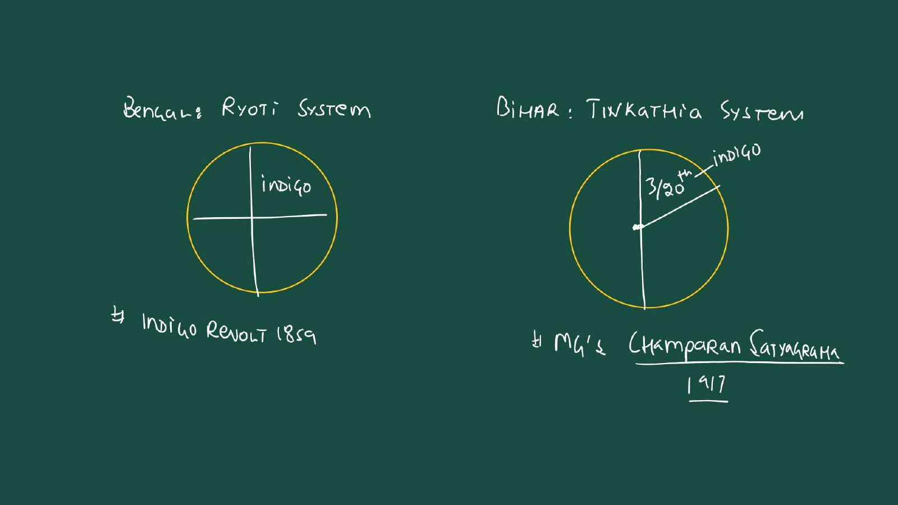
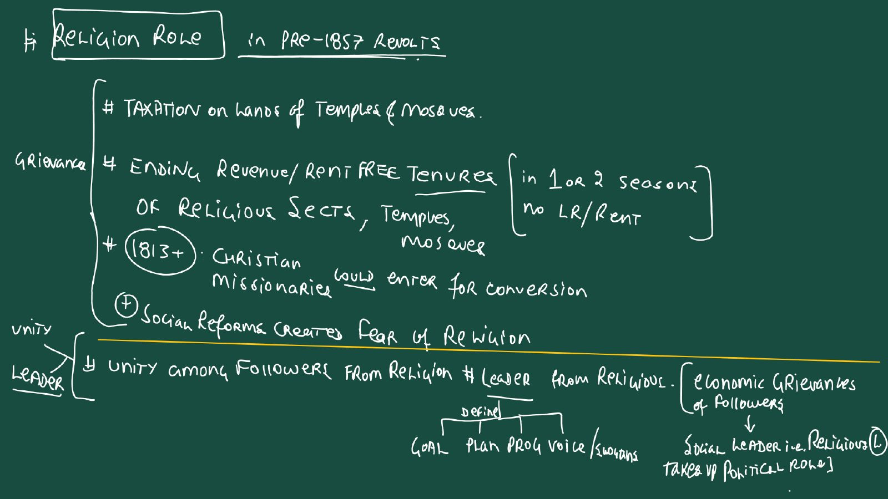
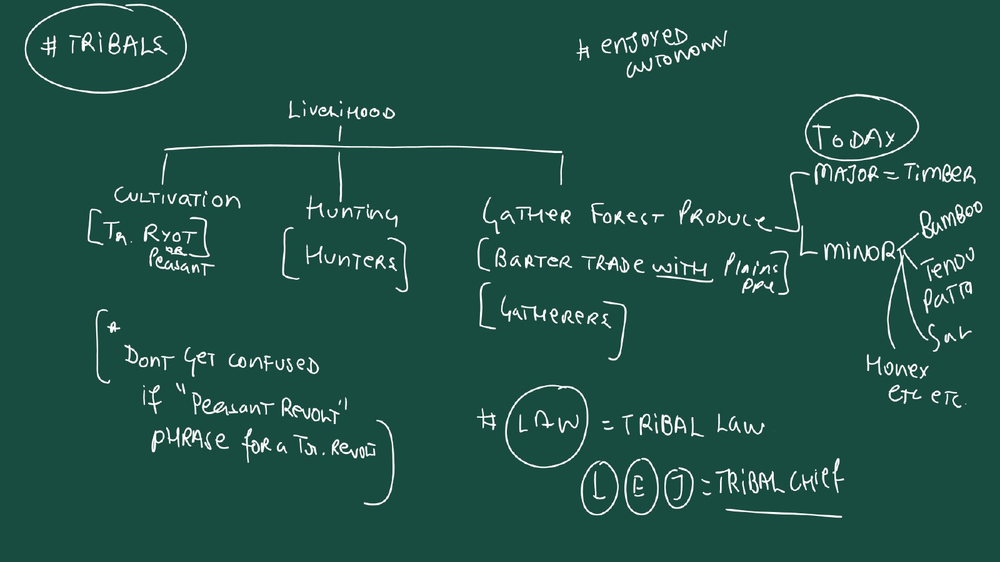
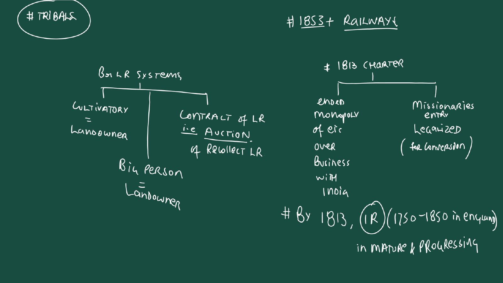
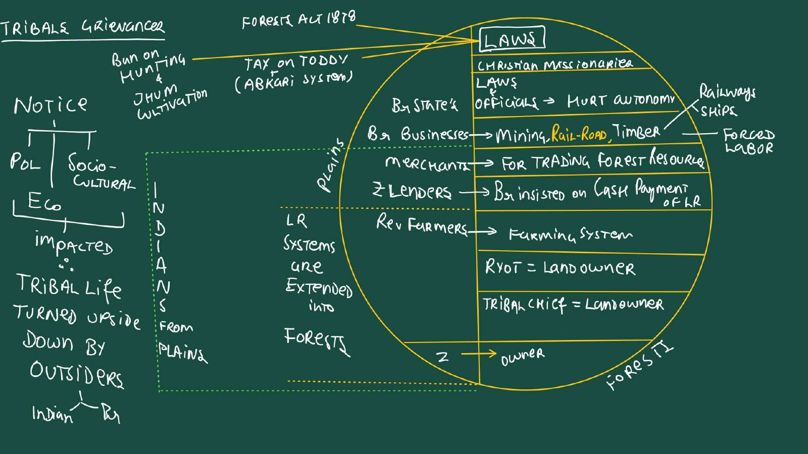
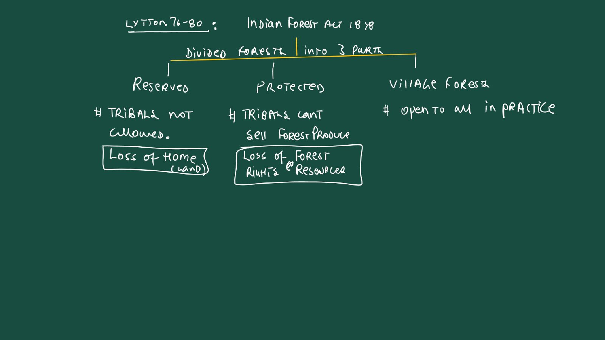
| Category | Rule | Effect on tribals (teacher) |
|---|---|---|
| Reserved Forests | Everything prohibited unless specifically permitted. The most commercially valuable forests. All traditional rights legally extinguished: no grazing, no firewood, no Jhum. Purpose: unhindered commercial timber extraction by the government and contractors | "Tribals not allowed": loss of home (land) |
| Protected Forests | Everything permitted unless specifically prohibited. Commercial potential but too much local use to close at once. The state could declare tree species state property and close sections at any time. A transitional category: many were later upgraded to Reserved | "Tribals can't sell forest produce": loss of forest rights and resources |
| Village Forests | Assigned to specific village communities. Very few were created. Strict colonial rules on cattle, wood and species; access could be revoked. The British never left any forest truly in local hands | "Open to all in practice" (the teacher's gloss) |
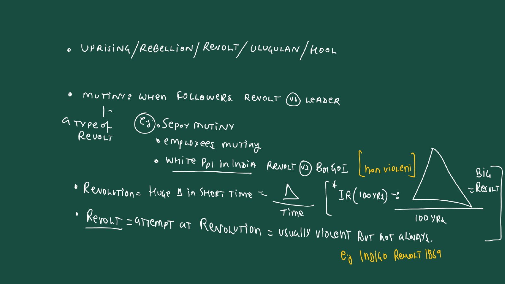
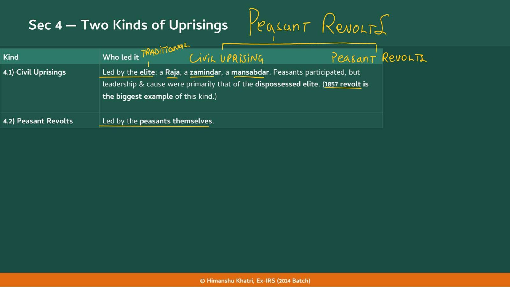
| No. | Revolt | Story |
|---|---|---|
| 5.1 | 1778-81: Raja Chait Singh of Benaras | Benaras was annexed by the EIC through the Treaty of Faizabad 1775. Chait Singh was a big zamindar with the title of Raja and the loyalty of his people, with his own military and fort. His estates were seized for non-payment of land revenue and he revolted. (PS1793 later formally brought Benaras into the Bengal-BOB-North Madras-Benaras settlement) |
| 5.2 | 1789: Bishnupur and Birbhum, Bengal | Local zamindars and their ryots oppressed by the LR demands (the handout: of the Permanent Settlement's precursors) rose against the EIC's revenue machinery. Minor in scale but frequent UPSC distractors: know the name and date (the PYQ 2006 wrong option C) |
| 5.3 | 1799: Nawab Wazir Ali 97-98 | The deposed Nawab of Awadh (ruled only 1797-98) revolted with peasant support. The slide adds: he was deposed by John Shore 93-98 in return for a promise of a Rs 76 lakh annual subsidy by his uncle Sadat Ali Khan II (under ToA 1765); the peasants joined because of high LR oppression |
| 5.4 | 1799-1805: Poligar Revolts | Poligars = traditionally autonomous local chiefs in South India. British Rule of Law and equality before law hurt their elevated social status (the same grievance as the taluqdars in 1857: loss of privilege backed by customary law). The Ryotwari settlement took away their lands; high LR on peasants brought popular participation. Revolted and crushed |
| 5.5 | Post-2nd Anglo-Maratha War (1803-05): Bundela chiefs | The Subordinate (Subsidiary) Alliance imposed a British Resident on the Maratha states. Bundela chiefs, suffering Resident interference, revolted with peasant support |
| 5.6 | 1809: Dewan Veluthampi of Travancore | After the Subsidiary Alliance of 1805, the British Resident interfered in Travancore's internal affairs. Veluthampi, the Dewan, revolted with Nair troops and peasants. Crushed |
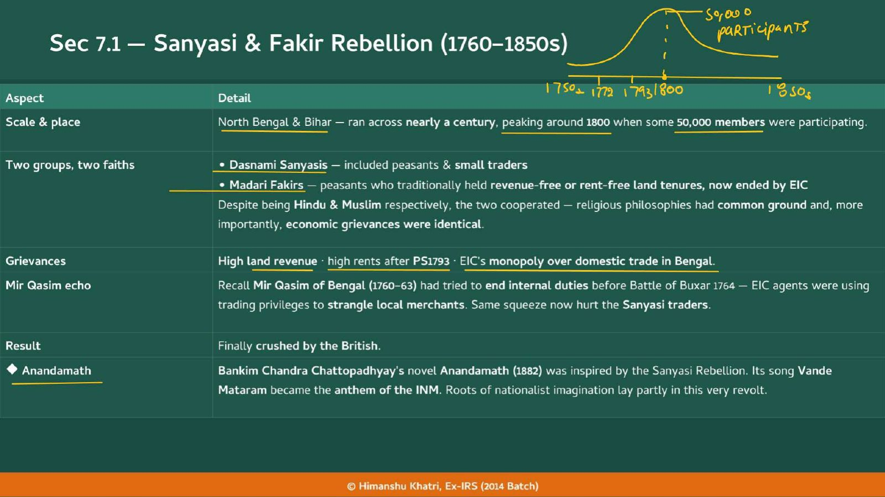
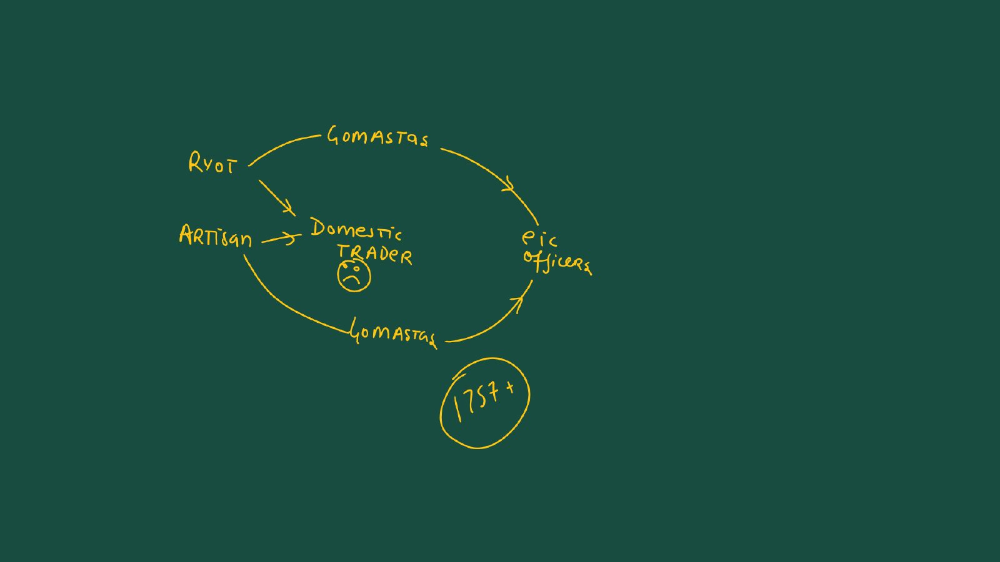
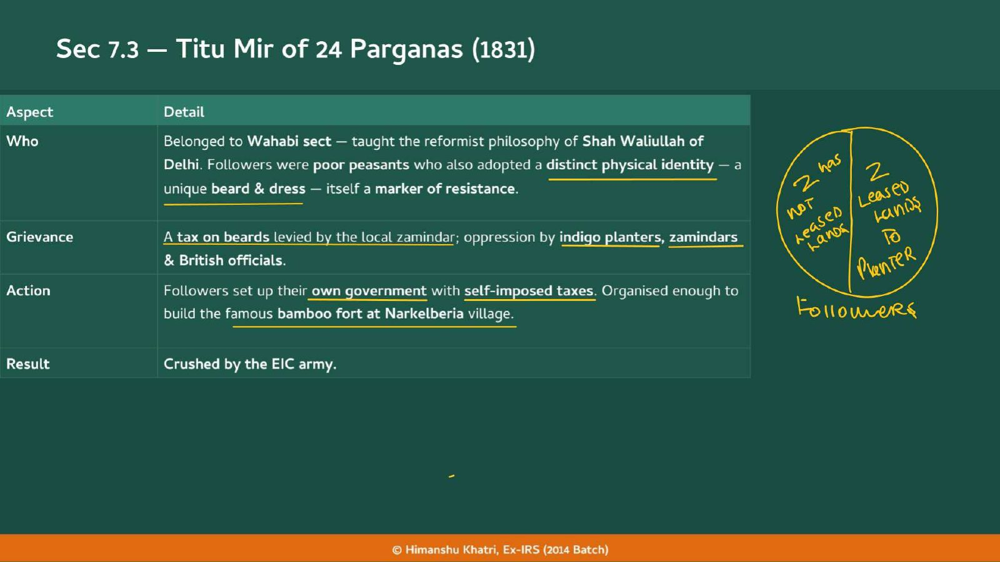
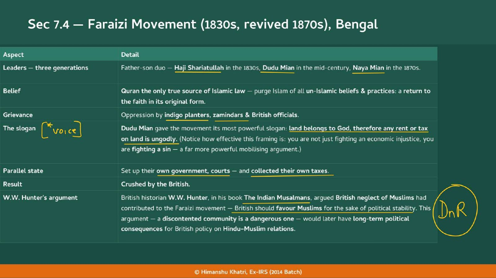
| Uprising | What happened |
|---|---|
| 8.4 Kol Uprising 1831-32, Chhota Nagpur and Singhbhum | The Kols' tribal autonomy was destroyed. The Raja of Chhotanagpur farmed out tribal lands to merchants and moneylenders, outsiders called Suds. The Kols lost customary land rights. Action: they targeted the property of the Suds, not their lives: again, the tribals knew their oppressors. Crushed by the army |
| 8.5 Kandh Uprising 1837-56, Odisha (Ghumsar/Kalahandi) | Leader: Chakra Bisoi. The British banned human sacrifice, tied to the Kandhs' religious ritual of Meriah. To the British a humanitarian intervention; to the Kandhs an attack on their religion and autonomy. Prolonged resistance, eventually crushed |
| 8.6 Khasi Uprising 1829-33 | Leader: U Tirot Sing. The British built the Brahmaputra Valley-Sylhet Road, bringing an influx of outsiders (British businesses, their Indian agents, British officials) into Khasi territory: loss of Khasi land and disruption of their way of life. Crushed |
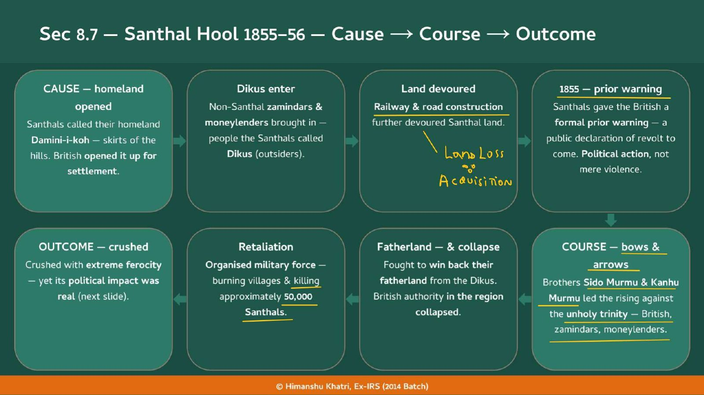
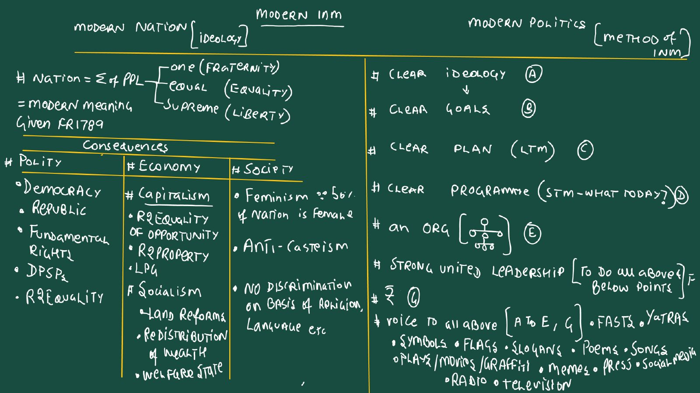
| Year | What happened |
|---|---|
| 1760 | Sanyasi and Fakir Rebellion begins (to the 1850s; peak about 1800, 50,000 members) ★ |
| 1770 | Great Bengal Famine: breaks the peasantry's economic spine before Rangpur |
| 1772 | Farming System in Bengal: LR auctioned to revenue farmers |
| 1775 | Treaty of Faizabad annexes Benaras |
| 1778 | Pahariya Revolt (Rajmahal Hills): earliest tribal resistance; Chait Singh's revolt begins (to 1781) ★ |
| 1783 | Rangpur Rebellion: Debi Singh and Gobinda Singh targeted ★ |
| 1789 | Bishnupur and Birbhum revolts (distractors) |
| 1793 | Permanent Settlement: zamindar as owner, abwabs, no occupancy right ★ |
| 1799 | Wazir Ali 97-98 revolts; Poligar Revolts begin (to 1805); Wodeyars restored in Mysore with SA 1799 |
| 1803 | EIC conquers Odisha; Bundela revolts (to 1805) |
| 1809 | Dewan Veluthampi of Travancore revolts |
| 1813 | Charter Act: EIC monopoly over business ended, missionary entry legalised |
| 1817 | Paika Rebellion, Khurda (core crushed by 1818; Jagabandhu surrenders 1825) ★ |
| 1818 | Bhil Revolts begin (to 1831) after Third Anglo-Maratha War |
| 1822 | Ramosi Uprising, Western Ghats |
| 1823 | Pagal Panthi Revolt (to 1833) |
| 1829 | Khasi Uprising (to 1833), Sati Abolition Act |
| 1830 | Mysore peasant revolt (to 1831); Faraizi movement begins |
| 1831 | Titu Mir; Kol Uprising (to 1832) ★ |
| 1837 | Kandh Uprising under Chakra Bisoi (to 1856) |
| 1840 | Moplah revolts begin (then 1870s, 1921) |
| 1850 | Lex Loci Act |
| 1855 | Santhal Hool (to 1856): prior warning, Sido and Kanhu Murmu, about 50,000 killed; Santhal Parganas ★ |
| 1856 | Hindu Widow Remarriages Act |
| 1857 | Revolt of 1857 (the culmination); Mutiny of the Sepoys ★ |
| 1859 | Indigo Revolt (Bengal Ryoti system); Rent Act 1859 ★ |
| 1870s | Rampa Rebellion begins (first phase crushed by 1880); Faraizi revived under Naya Mian |
| 1875 | Deccan Riot (Prelims 1998 chronology) |
| 1878 | Indian Forests Act under Lytton 76-80: Reserved, Protected, Village ★ |
| 1882 | Anandamath by Bankim Chandra Chattopadhyay (inspired by the Sanyasi Rebellion) |
| 1899 | Birsa Munda launches the Ulugulan on Christmas (to 1900) ★ |
| 1917 | Gandhi's Champaran Satyagraha (Tinkathia, Bihar) |
| 1920 | Rampa tribals merge into the Non-Cooperation Movement |
| 1922 | NCM withdrawn; Alluri Sitarama Raju re-initiates the Fituri |
| 1924 | Alluri Sitarama Raju captured and executed |
| 2006 | Forest Rights Act (today's correction of the 1878 Act) |
The Farming System 1772, PS1793 (zamindar as owner), Ryotwari and Mahalwari are the peasant's grievance drivers; Cornwallis 86-93 experimented before PS1793.
Gomastas and the EIC's domestic trade monopoly (the Sanyasi grievance); Mir Qasim 60-63's internal duties; ToA 1765 (Wazir Ali's uncle's subsidy).
The Residents who provoked the Bundelas and Veluthampi; the SA 1799 that squeezed Mysore's peasants and obliged the EIC to protect the ruler.
The Wodeyar restoration of 1799, the Third Anglo-Mysore War 1789-92 (Malabar annexed: Moplah roots), Travancore and Veluthampi.
The 2nd Anglo-Maratha War (Bundelas) and the 3rd (1818: Bhil and Ramosi homelands under direct EIC control).
Sati 1829, Lex Loci 1850 and Widow Remarriage 1856 as the "fear of religion" grievance; the WEMC's response.
1857 is the biggest civil uprising and the culmination of the revolts here; the teacher's three similarities (grievances, methods, leadership).
The Indigo Revolt 1859 and the Deccan Riot 1875 that complete the Prelims 1998 chronology.
Champaran 1917 (Tinkathia) and the NCM that Rampa merged into; the liquor-shop picketing begun here as a grievance.
Moplah 1921 and the later peasant politics that grow out of these earlier peasant revolts.
Read the question, answer in your head, then tap to check.
| Mains PYQ: "1857 was the culmination of small and big rebellions in the first 100 years of British rule." Skeleton? | Intro: peasants and tribals responded first; 1857 is the culmination of a hundred years. Body on the teacher's heads: grievances (LR, forests, religion, loss of elite privilege), methods (violence, targeted attacks, own governments), leadership (civil uprisings led by traditional elites, 1857 the biggest; peasant, religion and tribal leaders). Closing: not 100% modern but anti-colonial. |
| Mains (FYQ): "Pre-history of modern nationalism": examine. Skeleton? | Intro: INM leaders' label. Body: fell short (not all-India, no coordination, local leaders, no plan, no democracy) but political (ideology, organisation, programme, awareness, symbolism: Rangpur, Kols, Santhal 1855 warning, Birsa Christmas 1899). Closing: pre-modern in form, political in substance; crimes hide, politics shows. |
| Who responded first to British rule, WEMC or peasants and tribals? | Peasants and tribals, with defiance and violence; the WEMC used socio-religious reform. |
| Teacher's one-line logic of the chapter? | The common man wants security (eco, physical, socio-cultural): peasant = LR; tribal = loss of forest resources + LR extended to forests; fear of religion. |
| Peasant versus farmer (teacher)? | Cultivator for food security, poor = ryot or peasant (basis: occupation); cultivator for profit, rich = farmer. |
| Who is a tribal and what autonomy did tribals have? | One who lives away from the mainstream (hills, forests, deserts, islands); autonomy: political (chief), economic (forest resources), socio-cultural (own way of life). |
| How did the Farming System 1772 and PS1793 hurt the ryot? | Farming System: revenue farmers auctioned the right, extracting maximum rent. PS1793: zamindar as owner, high rents, illegal abwabs, eviction, no occupancy rights. |
| What was the Rent Act 1859? | Occupancy right (no arbitrary eviction) for ryots cultivating the same plot continuously for more than twelve years; implementation in Bengal ineffective. |
| How did the indigo debt trap work? | Loan from the planter at the start; inputs bought from and indigo sold back to him at a below-market price; cannot pay rent and loan; soil exhausted; forced to borrow and grow indigo again or be evicted. |
| Ryoti versus Tinkathia? | Bengal Ryoti: indigo on a quadrant, Indigo Revolt 1859. Bihar Tinkathia: indigo on 3/20th, Champaran Satyagraha 1917. |
| Indigo end dates: handout versus teacher? | Handout: Bengal until 1860, Bihar until 1918. Teacher's board: till 1863, then 1863-1918. Use the teacher's. |
| Religion's dual role? | Grievance (missionaries, ended rent-free tenures, social reform laws) and organiser (leader, philosophy, community, collective action in a vacuum of parties and press). |
| Three reform laws seen as interfering in religion? | Sati Abolition Act 1829, Lex Loci Act 1850 (inheritance after conversion), Hindu Widow Remarriages Act 1856. |
| What did the 1813 Charter do (teacher)? | Ended the EIC's monopoly over business with India and legalised missionary entry for conversion. |
| Four routes of LR into tribal land? | Plains zamindars made owners; lands farmed to revenue farmers; the chief made a zamindar; tribal ryots made individual owners. |
| Why were Jhum, Podu and hunting banned? | The British wanted settled peasant communities paying LR regularly, for ease of collection. |
| The three forest categories of 1878? | Reserved (all prohibited unless permitted; loss of home), Protected (all permitted unless prohibited; state can close; loss of forest rights), Village (few and strictly controlled). Lytton 76-80; railway sleepers. |
| How did the Abkari system hit tribals? | State monopoly over liquor; right auctioned to contractors who raised prices; unlicensed brewing criminalised; excise second only to LR; later fed Gandhi's liquor picketing. |
| Civil uprising versus peasant revolt? | Civil: led by elites (Raja, zamindar, mansabdar); 1857 the biggest example. Peasant revolt: led by peasants themselves. |
| Chait Singh's revolt? | 1778-81, Benaras (annexed by the Treaty of Faizabad 1775); a big zamindar-Raja with a fort; estates seized for non-payment of LR. |
| Why did Poligars, Bundelas and Veluthampi revolt? | Poligars: Rule of Law and Ryotwari took status and land. Bundelas (1803-05) and Veluthampi (1809): British Resident interference after the Subordinate or Subsidiary Alliance. |
| What provoked the Paika Rebellion of 1817? | Loss of jagirs, revenue in silver (Sicca) not cowries, sea-salt ban and monopoly, and the dethroning of the Raja of Khurda; led by Bakshi Jagabandhu, with peasants, salt makers and Kondhs. |
| How and when did the Paika revolt end? | Core crushed by 1818 under martial law; Jagabandhu surrendered in 1825 after a jungle guerrilla war. |
| Rangpur 1783: cause, action? | Farming System 1772 (Debi Singh and Gobinda Singh) after the 1770 famine; looted grain stores, freed prisoners, attacked courts, ran own government with self-imposed taxes; crushed. |
| Why did Mysore's peasants revolt in 1830-31? | The Wodeyar government raised LR to pay the heavy subsidy under SA 1799; they revolted against both; the EIC crushed it to protect the ruler. |
| Sanyasi and Fakir Rebellion? | 1760-1850s, North Bengal and Bihar, peak about 1800 with 50,000; Dasnami Sanyasis and Madari Fakirs; high LR, rents after PS1793, EIC trade monopoly; inspired Anandamath 1882 and Vande Mataram. |
| Titu Mir 1831? | Wahabi following Shah Waliullah; beard and dress identity; tax on beards; own government and taxes; bamboo fort at Narkelberia; crushed by the EIC army. |
| Faraizi leaders and slogan? | Haji Shariatullah, Dudu Mian, Naya Mian; "land belongs to God, so any rent or tax is ungodly"; Hunter's The Indian Musalmans argued for favouring Muslims. |
| Moplah roots? | Malabar annexed after the Third Anglo-Mysore War (1789-92); British recognised only Janmies as owners, so Moplah Muslim ryots became tenants; communal colour; 1840, 1870s, 1921. |
| British response to Pahariya, Bhil, Ramosi? | Pahariya: force and containment into the hills. Bhil: suppressed plus the Bhil Corps. Ramosi: ex-Maratha watchmen, put down by force. |
| Kol, Kandh and Khasi triggers and leaders? | Kol 1831-32: Suds and farming out of tribal lands; property not lives. Kandh 1837-56: ban on Meriah; Chakra Bisoi. Khasi 1829-33: Sylhet road outsiders; U Tirot Sing. |
| Santhal Hool 1855-56 in brief? | Damini-i-koh opened to Dikus; railways and roads took land; 1855 public prior warning; Sido and Kanhu Murmu against the unholy trinity; about 50,000 killed; Santhal Parganas and land-transfer restriction. |
| What did modern nationalism and modern politics need (teacher and handout)? | Nation: fraternity, equality, liberty (French Revolution 1789). Politics: ideology, goals, plan, programme, organisation, leadership, money, voice. |
| Why were the revolts not modern nationalism? | Not all-India, no coordination, local leaders, no planning, no democratic goal. |
| Birsa Munda's Ulugulan? | 1899-1900, Chhota Nagpur; loss of land, officials, missionaries; belief that bullets would turn to water; launched on Christmas 1899; crushed. |
| Rampa Rebellion in three phases? | 1870s, led by Muttadars, crushed by 1880; 1920 merged into NCM (forest-law violation) under Alluri Sitarama Raju; 1922 Fituri restarted; executed 1924. |
Tap the card to flip.